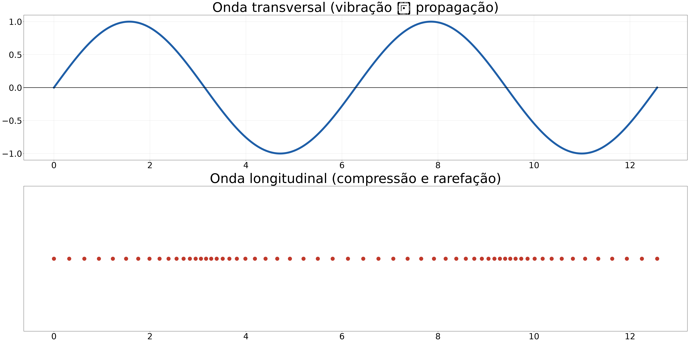
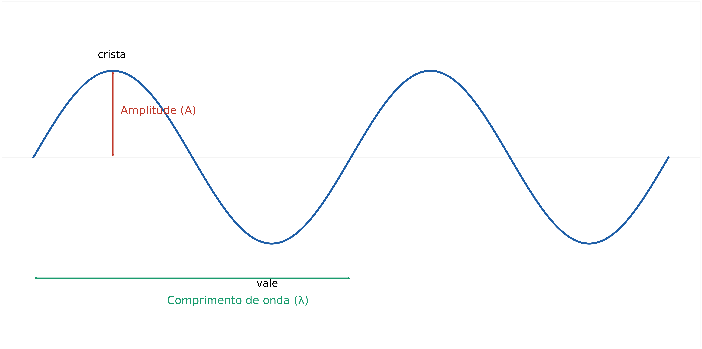
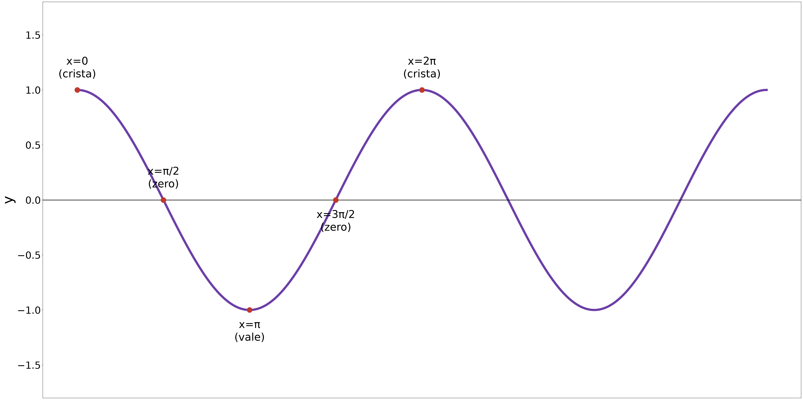
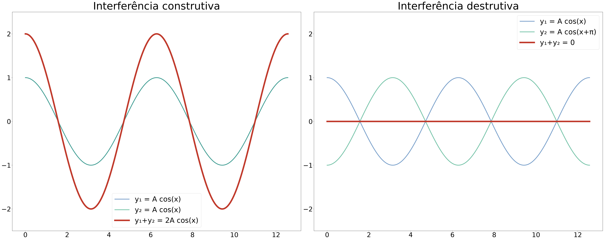
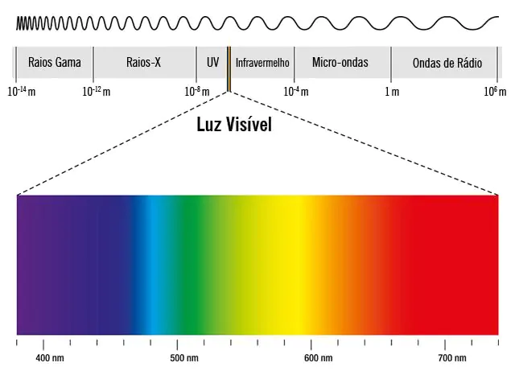
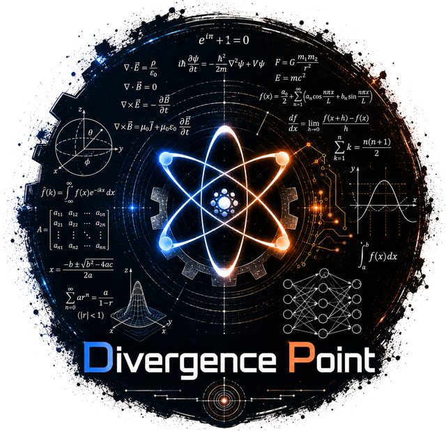

Uma onda é uma perturbação que se propaga através de um meio (ou do vácuo), transportando energia sem transportar matéria.
Exemplo: ao jogar uma pedra num lago, as ondas se afastam do ponto de queda…
…mas uma rolha flutuando na água apenas sobe e desce no lugar, ela não é “levada” pela onda.
É a energia da perturbação que viaja, não a água (ou o meio) em si.
Som, luz, ondas de rádio, micro-ondas, ondas do mar, terremotos, sinal de wi-fi… tudo isso são fenômenos ondulatórios
Entender ondas é entender como a informação e a energia se propagam no universo
Ondas mecânicas → precisam de um meio material para se propagar (não existem no vácuo)
Exemplos: som, ondas em cordas, ondas do mar, terremotos
Ondas eletromagnéticas → não precisam de meio, propagam-se até no vácuo
Exemplos: luz, ondas de rádio, micro-ondas, raios-X
Ondas transversais → a vibração é perpendicular à direção de propagação
Exemplos: onda numa corda, luz, ondas na água
Ondas longitudinais → a vibração é paralela à direção de propagação (compressão e rarefação)
Exemplos: som, onda numa mola comprimida


Crista → ponto mais alto da onda Vale → ponto mais baixo da onda
Amplitude (\(A\)) → distância máxima entre a posição de equilíbrio e a crista (ou vale)
Comprimento de onda (\(\lambda\)) → distância entre duas cristas (ou dois vales) consecutivos
Período (\(T\)) → tempo necessário para completar um ciclo completo da onda
Frequência (\(f\)) → número de ciclos completos por unidade de tempo
\[f = \dfrac{1}{T}\]
️ A unidade de frequência é o hertz (Hz), que equivale a \(1\) ciclo por segundo.
Uma onda tem frequência \(f = 50\) Hz. Qual é o seu período?
Passo 1: Use \(T = \dfrac{1}{f}\)
Passo 2: \(T = \dfrac{1}{50}\)
Resposta: \(T = 0{,}02\,\)s \(= 20\,\)ms
Em um período \(T\), a onda percorre exatamente um comprimento de onda \(\lambda\).
Velocidade é sempre distância dividida por tempo: \[v = \dfrac{\text{distância}}{\text{tempo}} = \dfrac{\lambda}{T}\]
Como \(f = \dfrac{1}{T}\), substituímos:
\[v = \lambda \cdot f\]
Uma onda tem comprimento de onda \(\lambda = 2\) m e frequência \(f = 50\) Hz. Qual é a sua velocidade de propagação?
Passo 1: \(v = \lambda \cdot f\)
Passo 2: \(v = 2 \times 50\)
Resposta: \(v = 100\,\)m/s
O som se propaga no ar a \(v = 340\) m/s. Uma nota musical tem frequência \(f = 170\) Hz. Qual é o seu comprimento de onda?
Passo 1: Isole \(\lambda\) na fórmula: \(\lambda = \dfrac{v}{f}\)
Passo 2: \(\lambda = \dfrac{340}{170}\)
Resposta: \(\lambda = 2\,\)m
Uma onda periódica pode ser descrita matematicamente pela função:
\[y = A\cos(x - \theta)\]
\(y\) → deslocamento de um ponto do meio, em relação ao equilíbrio
\(A\) → amplitude (o maior valor que \(y\) pode assumir)
\(x\) → a fase, medida em radianos, que indica “em que ponto do ciclo” a onda está
\(\theta\) → é o angulo inical, medida em radianos, que indica “em que ponto do ciclo” a onda começou

Em \(x=0\): \(y = A\cos(0) = A\) → crista
Em \(x=\pi\) (meia volta): \(y = A\cos(\pi) = -A\) → vale
Em \(x=2\pi\) (volta completa): \(y = A\cos(2\pi) = A\) → a onda se repete
O ciclo completo de um cosseno acontece a cada \(2\pi\) radianos, assim como uma onda se repete a cada comprimento de onda \(\lambda\).
Uma onda é descrita por \(y = 4\cos(x)\) (em cm). Qual é o deslocamento \(y\) quando \(x = \pi\) rad?
Passo 1: Substitua \(x=\pi\): \(y = 4\cos(\pi)\)
Passo 2: Lembre que \(\cos(\pi) = -1\)
Resposta: \(y = -4\,\)cm (a onda está no vale)
Ocorre quando a onda encontra um obstáculo e muda de direção, permanecendo no mesmo meio.
O ângulo de incidência é sempre igual ao ângulo de reflexão
Exemplos: eco do som, imagem em um espelho
Uma pessoa grita perto de um paredão e ouve o eco \(2\) s depois. Sabendo que \(v_{som} = 340\) m/s, qual é a distância até o paredão?
Passo 1: O som percorre a distância duas vezes (ida e volta): \(2d = v \cdot t\)
Passo 2: \(2d = 340 \times 2 = 680\)
Passo 3: \(d = \dfrac{680}{2}\)
Resposta: \(d = 340\,\)m
Ocorre quando a onda muda de meio de propagação.
Ao mudar de meio, a velocidade e o comprimento de onda mudam…
…mas a frequência permanece a mesma, pois é determinada pela fonte que gerou a onda
\[\dfrac{v_1}{\lambda_1} = \dfrac{v_2}{\lambda_2} = f\]
Uma onda sonora de frequência \(500\) Hz se propaga no ar (\(v=340\) m/s) e passa a se propagar na água (\(v=1500\) m/s). Qual é o novo comprimento de onda na água?
Passo 1: A frequência não muda ao trocar de meio: \(f=500\) Hz
Passo 2: \(\lambda_{água} = \dfrac{v_{água}}{f} = \dfrac{1500}{500}\)
Resposta: \(\lambda_{água} = 3\,\)m (bem maior que no ar, onde \(\lambda_{ar}=0{,}68\,\)m)
Capacidade da onda de contornar obstáculos ou se espalhar ao passar por uma fenda.
É mais perceptível quando o tamanho do obstáculo/fenda é comparável ao comprimento de onda
Por isso conseguimos ouvir alguém conversando atrás de uma porta entreaberta (o som tem \(\lambda\) grande), mas não conseguimos vê-lo (a luz tem \(\lambda\) muito pequeno)
Ocorre quando duas ou mais ondas se sobrepõem no mesmo ponto do meio.
Interferência construtiva → ondas em fase, as amplitudes se somam
Interferência destrutiva → ondas fora de fase, as amplitudes se cancelam
Duas ondas idênticas e em fase chegam ao mesmo ponto: \(y_1 = A\cos(x)\) e \(y_2 = A\cos(x)\)
Passo 1: A onda resultante é a soma: \(y = y_1 + y_2\)
Passo 2: \(y = A\cos(x) + A\cos(x)\)
Resposta: \(y = 2A\cos(x)\), a amplitude dobrou! Isso é interferência construtiva.
Agora as duas ondas chegam defasadas em meio ciclo (\(\pi\) rad): \(y_1 = A\cos(x)\) e \(y_2 = A\cos(x+\pi)\)
Passo 1: Lembre que \(\cos(x+\pi) = -\cos(x)\), ou seja \(y_2 = -A\cos(x)\)
Passo 2: Some: \(y = A\cos(x) + \big(-A\cos(x)\big)\)
Resposta: \(y = 0\), as ondas se cancelam completamente! Isso é interferência destrutiva.

Duas fontes emitem ondas em fase, com comprimento de onda \(\lambda = 2\) m. Um ponto \(P\) está a \(10\) m da fonte 1 e a \(14\) m da fonte 2. A interferência em \(P\) é construtiva ou destrutiva?
Passo 1: Calcule a diferença de caminho: \(\Delta S = 14 - 10 = 4\,\)m
Passo 2: Divida pelo comprimento de onda: \(\dfrac{\Delta S}{\lambda} = \dfrac{4}{2} = 2\)
Passo 3: Como deu um número inteiro de comprimentos de onda…
Resposta: interferência construtiva em \(P\)
Fenômeno em que um sistema vibra com amplitude máxima ao ser excitado numa frequência igual à sua frequência natural.
Cada objeto/sistema tem sua própria frequência natural de vibração
Exemplos: uma taça de cristal quebrando com um som muito agudo; empurrar um balanço no ritmo certo para ele ir cada vez mais alto
Mudança aparente na frequência percebida de uma onda quando há movimento relativo entre fonte e observador.
Fonte se aproximando → ondas “comprimidas” → frequência percebida aumenta (som mais agudo)
Fonte se afastando → ondas “espaçadas” → frequência percebida diminui (som mais grave)
Uma ambulância com a sirene ligada se aproxima de você e, em seguida, se afasta. O que acontece com o som percebido?
Enquanto se aproxima: as frentes de onda chegam mais “comprimidas” até você
Consequência: frequência percebida maior → som mais agudo
Enquanto se afasta: as frentes de onda chegam mais “espaçadas”
Resposta: o som fica mais agudo na aproximação e mais grave no afastamento, por isso a sirene “muda de tom” ao passar por você
Altura (relacionada à frequência) → sons graves (frequência baixa) x sons agudos (frequência alta)
Intensidade (relacionada à amplitude) → som forte x som fraco, medida em decibéis (dB)
Timbre → permite diferenciar a mesma nota tocada por instrumentos diferentes (relacionado ao formato da onda)
Em geral, o som se propaga mais rápido em meios mais “rígidos”:
Sólidos \(>\) Líquidos \(>\) Gases
No ar, a \(20°C\): \(v_{som} \approx 340\,\)m/s
O ouvido humano detecta frequências entre \(20\) Hz e \(20\,000\) Hz. Considerando \(v_{som}=340\) m/s no ar, quais os comprimentos de onda correspondentes a esses limites?
Passo 1: Para \(f=20\,000\) Hz: \(\lambda_{min} = \dfrac{v}{f} = \dfrac{340}{20\,000}\)
Passo 2: \(\lambda_{min} = 0{,}017\,\)m \(= 1{,}7\,\)cm
Passo 3: Para \(f=20\) Hz: \(\lambda_{max} = \dfrac{v}{f} = \dfrac{340}{20}\)
Resposta: \(\lambda\) varia de \(1{,}7\,\)cm até \(17\,\)m
Quando uma corda é presa nas duas pontas e vibra, formam-se pontos fixos (nós) e pontos de vibração máxima (ventres).
No modo fundamental (mais simples), a corda forma meio comprimento de onda
\[L = \dfrac{\lambda}{2} \quad \text{(modo fundamental)}\]
Uma corda de \(2\) m de comprimento vibra no seu modo fundamental. Qual é o comprimento de onda da vibração?
Passo 1: \(L = \dfrac{\lambda}{2} \Rightarrow \lambda = 2L\)
Passo 2: \(\lambda = 2 \times 2\)
Resposta: \(\lambda = 4\,\)m
Ondas eletromagnéticas são perturbações de um campo elétrico (\(E\)) e um campo magnético (\(B\)) que se propagam juntas pelo espaço.
Não precisam de meio material, se propagam até no vácuo
São geradas por cargas elétricas aceleradas (por exemplo, elétrons oscilando numa antena)
São sempre ondas transversais
Os campos \(E\) e \(B\) oscilam perpendiculares entre si e perpendiculares à direção de propagação
No vácuo, todas as ondas eletromagnéticas viajam à mesma velocidade
\[c \approx 3 \times 10^{8}\,\text{m/s} \;\;(300\,000\,\text{km/s})\]
A mesma equação fundamental continua valendo, só trocamos \(v\) por \(c\): \[c = \lambda \cdot f\]

Rádio → comunicação (rádio, TV, wi-fi) Micro-ondas → fornos, radares, satélites
Infravermelho → controles remotos, câmeras térmicas Luz visível → o que enxergamos
Ultravioleta → bronzeamento, esterilização (em excesso, causa danos à pele)
Raios X → radiografias médicas, segurança em aeroportos Raios gama → radioterapia, astrofísica
Uma estação de rádio FM transmite em \(f = 100\,\)MHz \(= 1\times10^{8}\) Hz. Sabendo que \(c = 3\times10^{8}\) m/s, qual é o comprimento de onda transmitido?
Passo 1: Isole \(\lambda\): \(\lambda = \dfrac{c}{f}\)
Passo 2: \(\lambda = \dfrac{3\times10^{8}}{1\times10^{8}}\)
Resposta: \(\lambda = 3\,\)m
A luz vermelha tem comprimento de onda aproximadamente \(\lambda = 7\times10^{-7}\) m. Qual é a frequência dessa luz?
Passo 1: Isole \(f\): \(f = \dfrac{c}{\lambda}\)
Passo 2: \(f = \dfrac{3\times10^{8}}{7\times10^{-7}}\)
Resposta: \(f \approx 4{,}3\times10^{14}\,\)Hz
Precisam de meio? → mecânicas: sim | eletromagnéticas: não
Tipo de vibração → mecânicas: transversais ou longitudinais | eletromagnéticas: sempre transversais
Velocidade no vácuo → mecânicas: não existem no vácuo | eletromagnéticas: sempre \(c\)
Dúvidas? É hora de perguntar!

Fenômenos Ondulatórios